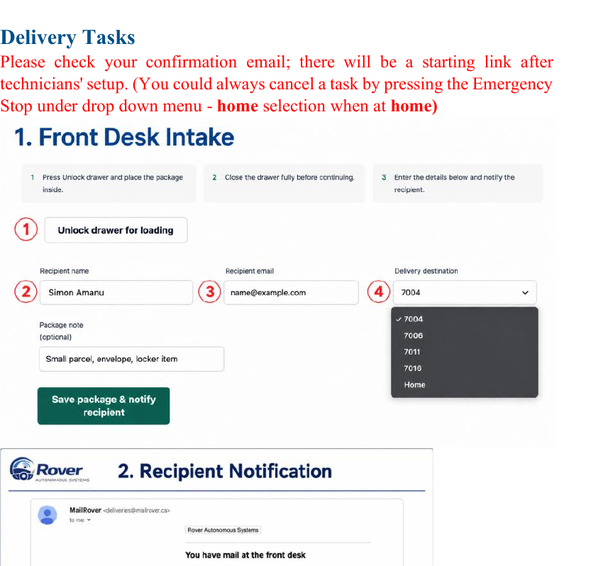
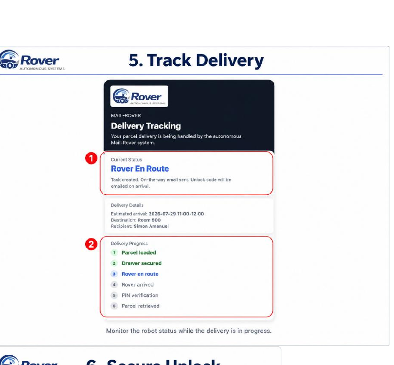
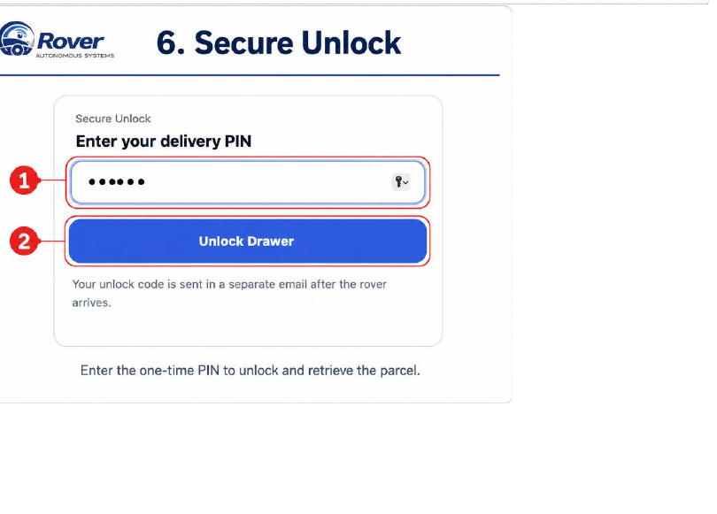
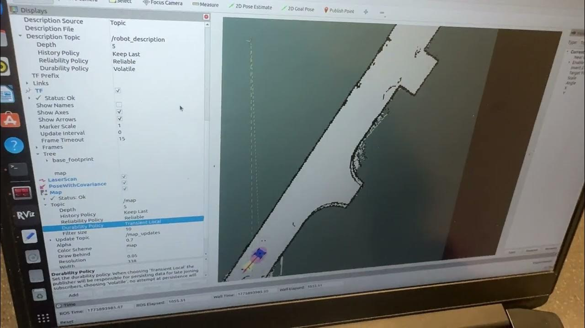
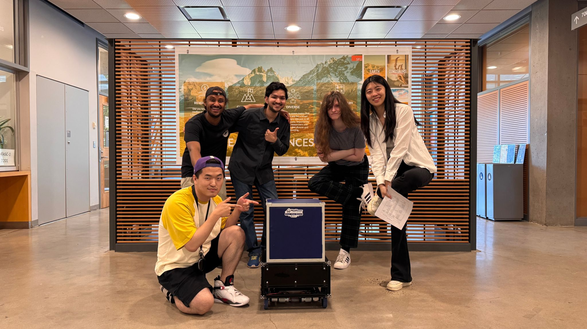

Web Application
Developed Flask-based staff and recipient workflows for task creation, delivery status, authenticated collection, and PIN entry, including failed-attempt handling.
A five-person SFU capstone prototype for indoor parcel distribution, integrating ROS 2 waypoint navigation, a Flask-based task interface, and PIN-authorized electromechanical locker access.

Residence staff register a parcel and select a predefined destination. The web application dispatches the task to the navigation stack; at arrival, the locker remains secured until successful recipient PIN validation.
I led the user-interface and access-control workstream, connecting delivery-state management, navigation messaging, PIN authentication, and the locker actuator. I also contributed to team-level wiring, power integration, and functional verification.
Developed Flask-based staff and recipient workflows for task creation, delivery status, authenticated collection, and PIN entry, including failed-attempt handling.
Integrated delivery commands and arrival status between the web application and the Raspberry Pi ROS 2 navigation workflow, coordinating cross-subsystem state transitions with teammates.
Integrated PIN authentication with the embedded locker-control interface, using GPIO-driven actuation and a solenoid-lock/servo control arrangement.
Validated interactions across Flask services, ROS 2 navigation, embedded I/O, and physical locker hardware; traced timing, communication, and state-transition faults during system integration.
Assisted with integration of low-voltage battery-powered loads and the wiring between the Raspberry Pi, motor drivers, sensors, and parcel-lock electronics, including regulator and common-ground troubleshooting.
The interface exposes parcel intake, mission progress, arrival authorization, and lock-release status to staff and recipients without exposing low-level actuator commands.



The team validated navigation, access control, and the web application independently before demonstrating the integrated delivery and collection sequence at the final capstone assessment.
Demonstrated autonomous motion to configured indoor waypoints without manual steering.
Evaluated obstacle-triggered stopping during navigation tests.
Verified that locker release followed a successful PIN authorization event.
Demonstrated coordinated task dispatch, navigation-state updates, and access-controlled parcel retrieval.
The media documents staged mobility bring-up, mapping trials, electromechanical assembly, and the final integrated demonstration.
Final assessment demonstration of task creation, autonomous navigation, browser-based status updates, and PIN-gated locker access.
Open Final Demo Video ↗ The video may take a moment to load.These recordings document early mobility and mapping milestones; the external videos open in a separate tab.
▶
Watch on YouTube ↗
Initial drive-system bring-up showing chassis movement and prototype configuration.
▶
Open mobility clip ↗
Mobility iteration captured prior to integrating mapping, parcel-workflow software, and access-control hardware.

▶ Watch mapping clip ↗Early environment-mapping run showing the map generated and updated during robot motion.
Photographs document intermediate hardware integration and the completed five-person team prototype.

MailRover was developed by a five-person team responsible for mechanical design, navigation, embedded sensing, electrical integration, and user interaction. My primary ownership was the web application and locker access control; other subsystem work described here was collaborative.